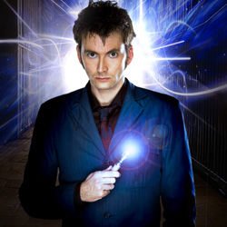

| Home | The Doctors | The Companions | The Villians |
|
|||
The Doctors
|
The Sixth Doctor Baker made his first appearance in Doctor Who as Commander Maxil in the story Arc of Infinity (1983). Producer John Nathan-Turner described Baker's performance as being "quite arch" and a little sassy. Maxil was one of the few characters actually to shoot the Doctor, then played by Peter Davison. At the time of Baker's casting as Davison's successor he was the only actor portraying the Doctor to have appeared in the television series as another character prior to taking on the leading role (in 2013 Peter Capaldi was announced as the Twelfth Doctor after having previously appeared in another role in the 2008 episode "The Fires of Pompeii"). When Baker was cast to replace Davison, many fans cited that shooting scene in Arc of Infinity, prompting Baker to say jokingly that he got the part of the Doctor by killing the incumbent. Colin is no relation to Tom Baker, who played the Fourth Doctor previously in Doctor Who. Baker's first appearance as the Doctor occurred at the final minutes of The Caves of Androzani, where he delivered his first few lines. The closing title sequence for episode four features Baker's face instead of Peter Davison and credits him as the Doctor before Davison's own credit. This was the first (and, to date, only) time that the new lead received top billing in the final story of an outgoing Doctor. Baker then made his first full story debut the following week in The Twin Dilemma. It was the first time since 1966, and only the second time in the series' history, that a new leading actor's debut story was shown before the conclusion of the previous lead's season. |